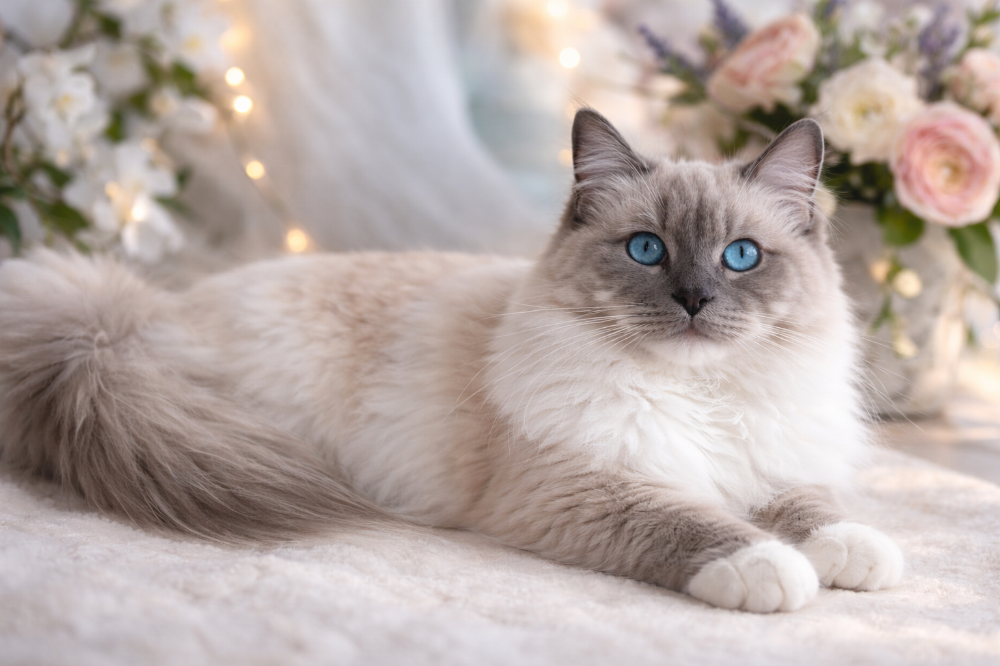
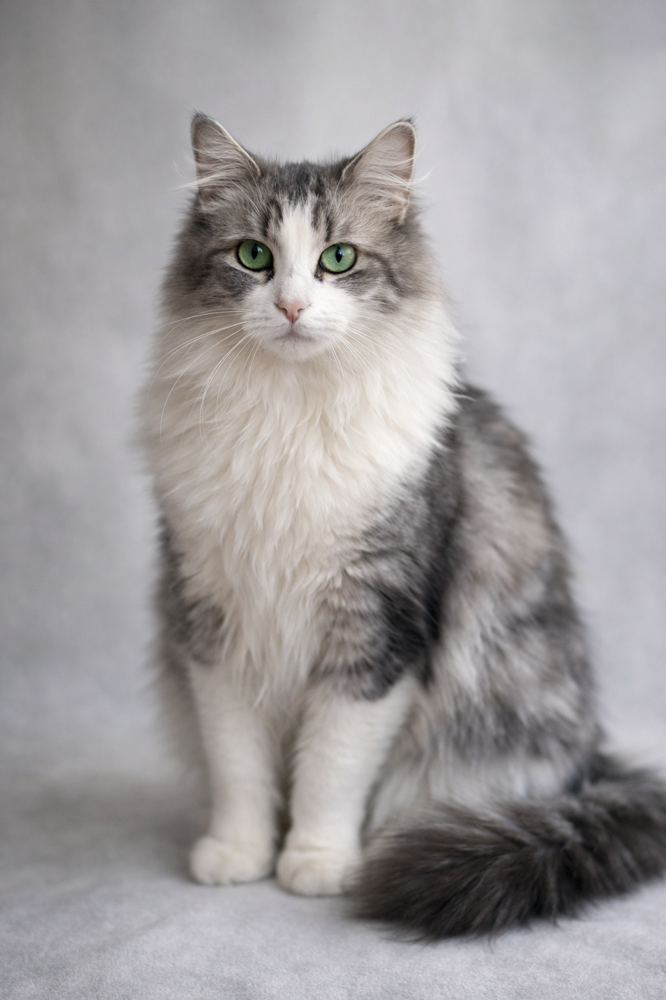

Infinity to elegancka kotka ragdoll o spokojnym charakterze i harmonijnej budowie. Wyróżnia się pięknymi niebieskimi oczami oraz łagodnym temperamentem typowym dla rasy.

Prada Pałuckie Pupile*PL
Rasa: Ragdoll
Umaszczenie: blue mitted
Kod EMS: RAG a 04
Status: kotka hodowlana
PKD N/N
HCM N/N
FIV/FELV N/N
Prada, w domu nazywana Pandorą, to niezwykle łagodna i kontaktowa kotka o pięknym umaszczeniu blue mitted.

Dalia Pałuckie Pupile*PL
Rasa: Norweska leśna
Umaszczenie: niebiesko-srebrny bicolor
Kod EMS: NFO as 03
Status: kotka hodowlana
FIV/FELV N/N
Dalia to piękna kotka norweska leśna o majestatycznej sylwetce i gęstym futrze. Charakteryzuje się inteligencją, spokojem i naturalnym urokiem tej rasy.